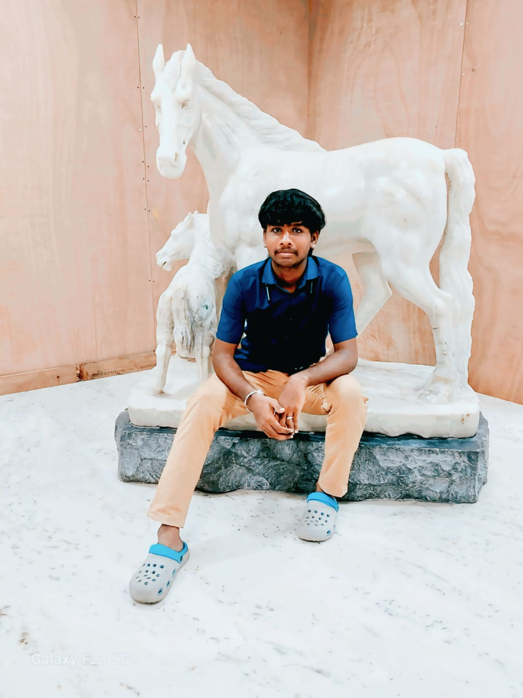

The Panimalar Bus Tracker is a cutting-edge web platform aimed at transforming college transport management. This project simplifies real-time bus tracking, route planning, and monitoring across Panimalar Engineering College's transportation system.
Designed with accessibility and efficiency in mind, this system benefits all stakeholders—students, staff, and transport administrators—by delivering live updates, smooth coordination, and transparent management.
To provide a secure, user-friendly, and technologically advanced bus tracking solution that ensures safety, punctuality, and transparency in college transportation.
To set the benchmark for smart mobility systems within educational institutions across India, enabling smarter campuses and a safer commute for all.

Roll No: 2024PECAI337
Roll No: 2024PECAI326
Roll No: 2024PECAI345
Roll No: 2024PECAI348